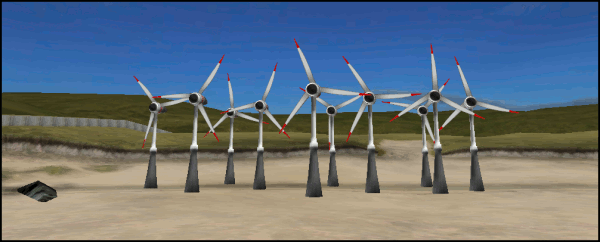
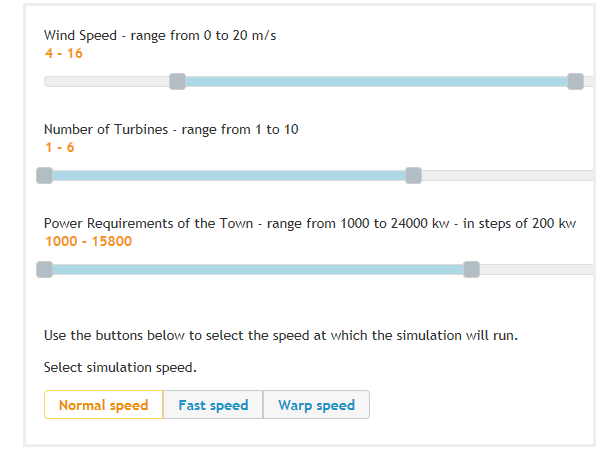
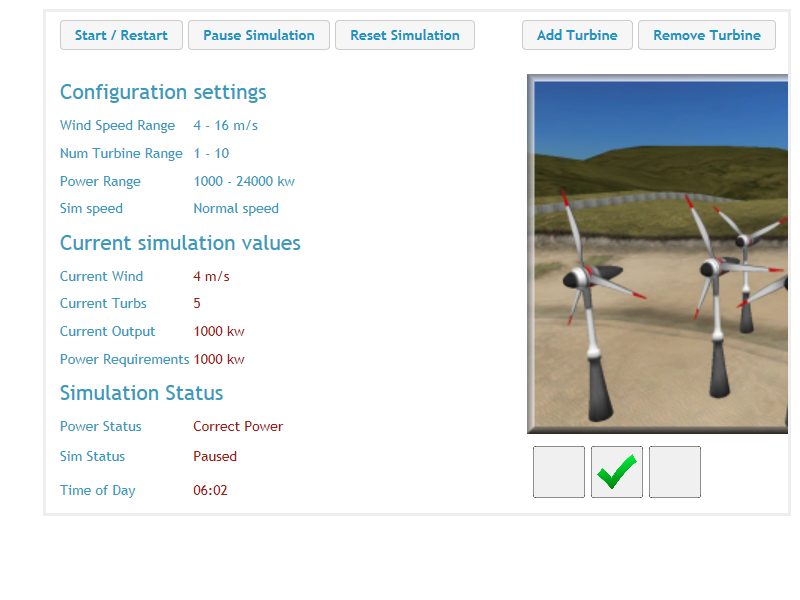
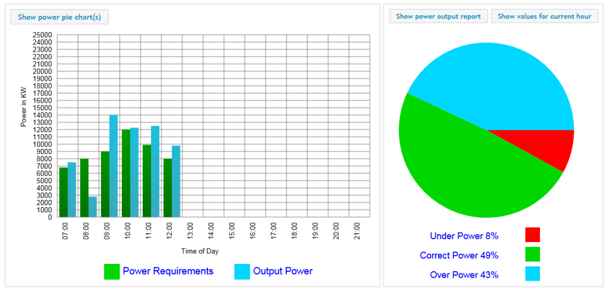
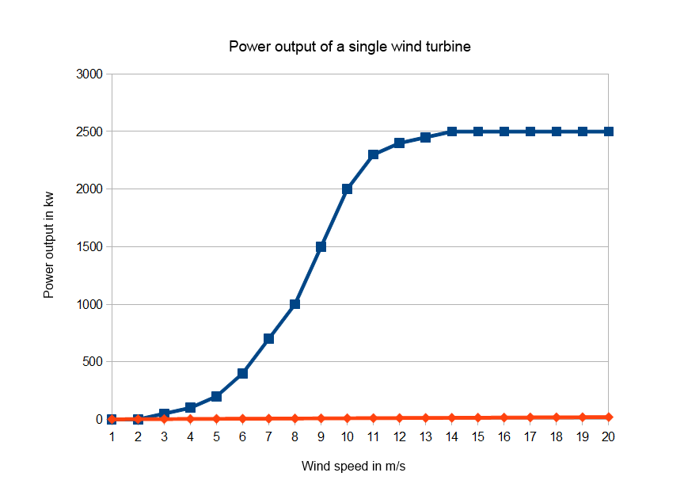
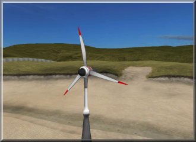
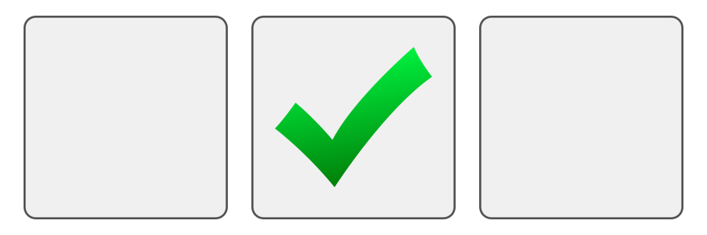

| Welcome to the GoLab Wind Energy Simulation. Take control of a wind farm to provide electrical energy to a small town. Understand how random changes - in wind speed and power requirement of the town - affect the use of this natural energy resource. | |
|  |
On a planet with an increasing population and finite fossil fuels, the need for alternative energy sources increases. Wind energy is one such source. Wind turbines use this natural resource to generate electricity.
There are many benefits to the use of wind energy. Wind is a renewable energy resource and there are no fuel costs. No harmful polluting gases are produced. Once the wind turbine is built the energy it produces does not cause green house gases or other pollutants. Remote areas that are not connected to the electricity power grid can use wind turbines to produce their own supply.
However, the amount of electricity generated depends on the strength of the wind - if there is no wind, there is no electricity. Also large wind farms are needed to provide entire communities with enough electricity. For example, the largest single turbine available today can only provide enough electricity for 475 homes, when running at full capacity.
The aim of this simulation is to power a small town or village using a wind farm of between 1 and 10 turbines. You will see that maintaining the correct amount of power - not too little, or not too much - while both wind and the power requirements of the town are constantly fluctuating can prove a challenge. Sometimes there will be insufficient power generated even with all available turbines in operation. At other times the power generated will be too great. The aim is to maximise the amount of time that only the correct amount of electricity is generated.
You will have control over the range of wind generated during the simulation, the number of turbines available, the range of of power required by the town or village, and the speed at which the simulation runs.
While the simulation is running you will be able to add or remove wind turbines to generate more or less electricity, pause the simulation, or stop and reset to reconfigure and start again.
The results page shows a bar graph comparing the power requirements of the town with the power generated by the wind turbines for each hour of the virtual day. Pie charts show you a comparison between insufficient power generated, the correct amount of power generated, or too much power generated.
Good luck!!
|
The configuration page is where you can set the parameters for the range of wind speed used during the simulation, the number of turbines available to add to or remove from the simulation, and the range of the power requirements of the town or village.
To change these settings simply drag the handles of the appropriate slider bars. If you want to set a specific range to a single figure - for example have a wind speed of only 9 m/s - simply drag the minimum and maximum handles to the same position. The buttons at the bottom of the configuration page allow you to set the virtual speed of the simulation. At normal speed time elapses at approximately 1 real second for 1 virtual minute, at fast speed it is 1 real second for 2 virtual minutes, and at warp speed it is 1 real second for 4 virtual minutes. Finally you should be aware that although you can open the configuration section and make changes while the simulation is running or paused, changes will not be applied until the simulation is 'reset'. |  |
|
The core simulation pages is where you run the simulation. You are able to start, pause, restart and pause the simulation using the buttons at the top of the screen. While the simulation is running (although not when it is paused) use the add or remove turbines buttons to increase or decrease the output power of the whole wind farm.
The data to the left of the screen shows you the configuration settings currently active. The current simulations values and simulation status sections change dynamically while the simulation is running and provide you with key information. The wind farm animation will reflect the number of turbines currently in operation. The power output indicator (beneath the animation) informs you whether the current wind speed and number of turbines combination is generating too little, too much of the correct amount of electricity to power the town. |  |
| The report charts page displays two charts. A bar chart shows a comparison between the power requirements of the town with the power output of the wind farm. This chart is updated every virtual hour. A pie chart shows the percentages for too little power generated, too much, and the correct amount. The pie chart is updated constantly. You can toggle between the two charts using the button at the top left of the page. Additionally the pie chart has two modes - the percentages for the whole simulation, and for the current hour. toggle between these using the 'Show values for ..' button. |
|  |
|
Wind turbines are quite simple in design. There are the propellers, a shaft and a generator. The propellers catch the wind and help rotate the shaft. The turning of the shaft helps to power the generator and create electricity.
Although wind turbine technology has improved efficiency since they became a serious source alternative energy, the amount of electricity produced by a wind turbine (measured in kilowatts - kw) requires a minimum wind speed (measured in metres per second - m/s), and will not produce any additional electricity once a peak wind speed has been reached. As can be seen by the graph, the turbines used in this simulation simulation start producing electricity at approximately 3 m/s, and reach their maximum output at approximately 14 m/s. You will be able to observe this effect by altering the settings of the wind speed parameter when you configure the simulation. |  |
For each of the three values - wind speed, number of turbines, and power requirements for the town drag the handles of the slides to change the range (minimum and maximum) that the simulation will use.
Number of Turbines - range from 1 to 10
Power Requirements of the Town - range from 1000 to 24000 kw - in steps of 200 kw
Use the buttons below to select the speed at which the simulation will run.
Select simulation speed.
| Configuration settings |  | |
| Wind Speed Range | ||
| Num Turbine Range | ||
| Power Range | ||
| Sim speed | ||
| Current simulation values | ||
| Current Wind | ||
| Current Turbs | ||
| Current Output | ||
| Power Requirements | ||
| Simulation Status | ||
| Power Status | ||
| Sim Status |  | |
| Time of Day | ||